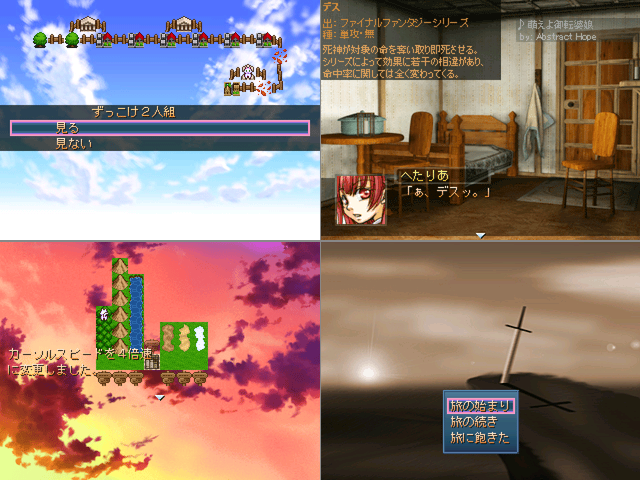

作品紹介
| ≪ Back | トップページ | 作品一覧 | Next ≫ |
| No004. - もしも色々な仮想世界の魔法が使えたら・終章 ～The Spirit of Eternity Sword HOMMAGE～ |

| 使用ツール：2000年 | |
| 作者：エル | |
| ジャンル：異世界系見るゲ | |
| 動画・配信：やれるものならやってみなさい | |
本作品は「既存のあらゆるゲームの魔法やら何やらが使えたらどうなるか？」 という夢一杯なコンセプトの元で開発された、所謂実験作品・・・・の続きです。 今作で物語は完結となります。過去作品はこちら 序章 中章 前作から約半年後の異世界が舞台となります。 今作は所謂永遠神剣シリーズの設定をメインとし、戦闘を重視した内容となっています。 知らない方にも遊べるよう説明を入れたつもりですが、判り難かったらゴメス。 またシナリオの都合上、オリジナルの魔法が出現します。予めご了承下さい。 前作よりオプション設定を強化し、ｂｇｍは全てｍｐ３に一新。そしてボリュームは対して何と8割に！ 文字をただ眺めていくだけなのは相変わらず。 誰か一枚絵書いて下さい。 背景素材数は兎も角、使用魔法数は倍以上。聖ヨト語は出ませんが新伽羅を追加！ 困った時のオーヴァドライブと魔王化を背に、主人公達のチート能力振りをご堪能下さい。 危機なんてなかった。 なお今回は設定が込み入っているので、メモ帳という名の設定資料集をｈｔｍｌで添付しておきます。 興味があってクリアしたけどさっぱり訳判らんって方にご活用頂けるかもしれません 詳しくは付属ｈｔｍｌりーどみーをご覧下さい。 またこのゲームによって発生した如何なる不可思議な出来事にも、 くそげ量産機ことエルは全く関与致しかねますので予めご了承下さい。 適当に作った、前作プレイ済み人向けプロモゲー ｄｌ パス：tkool 上記は１月末に自動消去されます
|
|
| 管理人コメント：
クイック(FF6)
→クイックタイム(ロマサガ2)
→クイック(FF6)
→召喚G.F.ケルベロス(FF8)
→タイムストップ(テイルズオブファンタジア)
→オーヴァドライヴ(サガフロ)
→{シャドウサーバンド(サガフロ)
→フェザーシール(ロマサガ3)
→ミストスクリーン(ポポロクロイス物語)
→ダブルファイアウォール(Ro)
→ダブルアイスウォール(Ro)
→キリエエレイソン(Ro)
→天使のおやつ(FF9)}
→クイック(FF6)
→オーヴァドライヴ(サガフロ)
→{トリプルマカカジャ(真・女神転生)
→トリプルエンゼルフェザー(SO2)
→メディタティオ(Ro)
→コンデンスマインド(MoE)
→ブラッドディール(MoE)
→マグニフィカート(Ro)
→天使のおやつ(FF9)}
→クイック(FF6)
→タイムストップ(テイルズオブファンタジア)
→オーヴァドライヴ(サガフロ)
→{光の剣(サガフロ)
→ソードバリア(ロマサガ2)
→ミサイルガード(ロマサガ2)
→ウォーターポール(ロマサガ3)
→トリプルクイックムーブ(TO)
→セルフバーニング(ロマサガ1)
→天使のおやつ(FF9)}
→クイック(FF6)
→オーヴァドライヴ(サガフロ)
→{トリプルスロウムーブx6(TO)
→天使のおやつ(FF9)}
→クイック(FF6)
→タイムストップ(テイルズオブファンタジア)
→オーヴァドライヴ(サガフロ)
→{敵にクイック(FFT)
→自分にリタンジャ(FFT)
→トリプル算術CT4狐鶏鼠(FFT)x2
→クイック(FFT)
→リタンジャ(FFT)
→天使のおやつ(FF9)}
→クイック(FF6)
→オーヴァドライヴ(サガフロ)
→{トリプルハイドビハインドx5(サガフロ)
→ヴォルテールにパラダイム(TO)
→天使のおやつ(FF9)}
→ヴォルテールがスナップドラゴン(TO)
→クイック(FF6)
→タイムストップ(テイルズオブファンタジア)
→オーヴァドライヴ(サガフロ)
→{トリプルデフグルーザ(TO)
→トリプルデフゾショネル(TO)
→トリプルデフハーネラ(TO)
→トリプルデフバーサ(TO)
→トリプルライトシフト(サガフロ)
→トリプルダークシフト(サガフロ)
→天使のおやつ(FF9)}
→クイック(FF6)
→タイムストップ(テイルズオブファンタジア)
→オーヴァドライヴ(サガフロ)
→{オーラ(FF8)
→ディスク蓋開け
→ジエンド(FF8)}
【MPが不足した場合】 オーヴァドライヴ(サガフロ) →{リヴァイヴァ(サガフロ) →算術CT4腐生骸屍(FFT) →自分にアスピルx4(FF5) →自爆(FF5)} または オーヴァドライヴ(サガフロ) →{(自分に攻撃してシャドウサーバントを解除) →マトラマジック(FFTA) →ベホマ(DQ5) (→シャドウサーバント) →適当な魔法x3} または クイック(FF6) →チャージスペル(TO) |
|
| ダウンロード(84.1MB) / 感想掲示板 ツイート |
更新情報・お知らせ
- 2012/01/28
- パッチ追加
- 2011/12/11
- 提出
- 2011/11/22
- コメント変更
- 2011/11/20
- コメント変更
- 2011/10/30
- エントリー